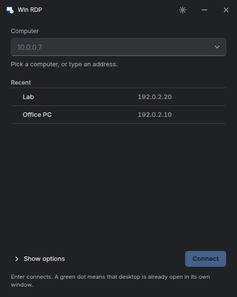

One window per computer
Keep saved computers close. Open separate session windows, resize your desktop, or switch to full screen with the connection bar within reach.
The computer you need, on the desktop you choose. A focused RDP client with familiar controls and a native window for every connection.
View GitHub releasesFor Linux x86_64. Early development.
Packages, checksums, and release notes live on GitHub.

Connect directly over your LAN or VPN. Your session goes to your Windows computer, with no Win RDP account or relay in between.
Keep saved computers close. Open separate session windows, resize your desktop, or switch to full screen with the connection bar within reach.
A Rust session engine with an experimental reliable UDP transport and automatic TCP fallback. See the fork for the protocol work behind the client.
Explore the IronRDP forkPer-computer controls for clipboard, remote audio, microphone, and printer redirection. Availability depends on your desktop and the Windows host’s settings.
Read the code, build the client, or report something that needs attention. Win RDP is in active development; check the release notes before installing.